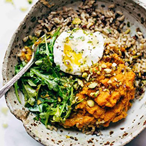
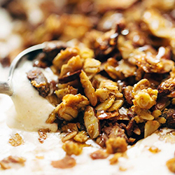

Breakfast Recipes
The most perfect fluffy pancakes, eggs on eggs on eggs, crunchy granolas, and baked goods for days. Who doesn't love breakfast?!
01. Feel-Good Apple Muffins

These Apple Muffins are EVERYTHING. Wholesome and nutritious, moist and dense, perfectly but not overly sweet, and honestly divine with a little butter and honey.
Click here for the recipe02. Triple Berry Cheesecake Muffins

Triple Berry Cheesecake Muffins! Juicy berries, a luscious cheesecake layer, and some heavy streusel on top to finish it off. Baked to perfection!
Click here for the recipe03. Carrot Cake Coffee Cake

Carrot Cake Coffee Cake! A super easy batter loaded with shredded carrots, topped with a thick crumbly cinnamony streusel, and finished with a melty sweet honey butter.
Click here for the recipe04. Healing Bowls with Turmeric Sweet Potatoes, Poached Eggs, and Lemon Dressing
Healing Bowls: turmeric sweet potatoes, brown rice, red quinoa, arugula, poached egg, lemon dressing.
Click here for the recipe05. Springy Blueberry Lemon Bread

Blueberry Lemon Bread - loaded with juicy lemon and blueberries. SO YUMMY with the perfect thick, soft texture!
Click here for the recipe06. Favorite Pumpkin Granola
Pumpkin Granola that is both salty and sweet! Made with REAL PUMPKIN along with oats, coconut, almonds, pistachios, maple syrup, cinnamon, and olive oil. My favorite fall granola! Adapted from the Last Granola Recipe by my friend The Faux Martha. Pumpkin Granola is in the house today and it is smelling reeeeeal nice up in here.
Click here for the recipe